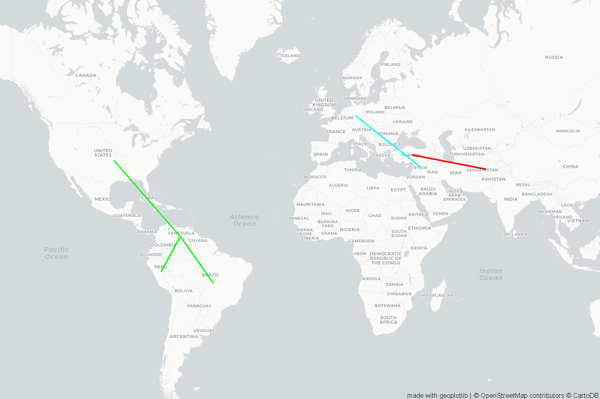

Asylum seekers
=> Data source: This page presents information about asylum applications in a given year and the progress of asylum-seekers through the refugee status determination process. Such data is available since 2000.
Map of the top 10 countries of origin who applied for asylum in 2018
Bar Chart of the top 10 countries of origin who applied for asylum in 2018, with the rejection rate.
Bar Chart of the top 10 countries of origin who applied for asylum in 2017, with the rejection rate.
After comparing the demand of asylum in the world in 2018 and 2017 for the top 10 origins, we can conclude the following:
For Irak, Syria, and Afghanstan the demand stayed relatively the same, which can be explained with the continuity of deterioration of their home countries.
For Venezuela, the demand has doubled in 2018, which can of course be explained by the increase of violence, insecurity, the deteriorating political, socioeconomic and human rights conditions. The high rejection rate is due to the fact that Venezuela is situated in a region where the asylum procedure are overwhelemed.
Visualizing the top 3 countries of Origin:
After the first analysis, the top three countries are Syria, Venezuela and Afghanstan:
Top 5 destinations for asylum by the top 3 origins in 2018
Top 5 destinations for asylum by the top 3 origins in 2018

The civil war in Syria is the most talked about war for the last 8 years, let's see where the Syrian asylum seekers went:
Top 5 destinations for asylum by the top 3 origins in 2018
Top 5 destinations for asylum by the top 3 origins in 2018
Looking at these figures that shows the number of syrian asylum seekers around the world in the last 8 years. we can clearly see that the number skyrocketed in 2015, in the peek of the syrian civil war. And that the most desirable country for syrian was Germany with a high of 266k people in 2016.